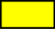

CSeccura
Esse site foi criado em 2015 com o intuito de localizar e informar locais do Brasil que grandes Secas. O site tem parceria com o Governo e a Kaepp's Studio, com os criadores principais sendo Cauã Rodrigues e Carlos Daniel Moradores da cidade de João Pessoa na Paraiba
Sem Seca

Seca Fraca
Seca Moderada
Seca Grave
Seca Extrema

Seca Excepcional
c= Curto Prazo
l= Curto Prazo
Para extrema (S3). Pelos mesmos motivos, no Acre, em várias áreas do Amazonas, no centro-norte de Rondônia, no norte e no sul do Pará e centro-norte do Tocantins, houve o avanço das secas fraca (S0), moderada (S1) e grave (S2). Além disso, no norte do Pará e leste do Amazonas, também houve agravamento da seca, que passou de moderada (S1) para grave (S2). Por outro lado, devido às chuvas acima da média no sul do Tocantins, houve recuo da seca moderada (S1).
Para extrema (S3). Pelos mesmos motivos, no Acre, em várias áreas do Amazonas, no centro-norte de Rondônia, no norte e no sul do Pará e centro-norte do Tocantins, houve o avanço das secas fraca (S0), moderada (S1) e grave (S2). Além disso, no norte do Pará e leste do Amazonas, também houve agravamento da seca, que passou de moderada (S1) para grave (S2). Por outro lado, devido às chuvas acima da média no sul do Tocantins, houve recuo da seca moderada (S1).
Serviço
Alterações mensais
Animações dos mapas
Comparações de mapas
Dados tabulares
Dados SIG
Mapa mais recente
Sobre a Seccura
Desenvolvida por Fabio
Slides
Informações
Doações